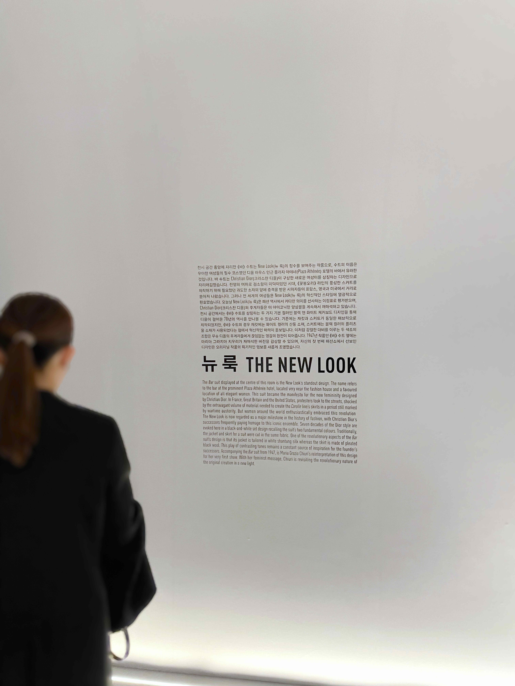
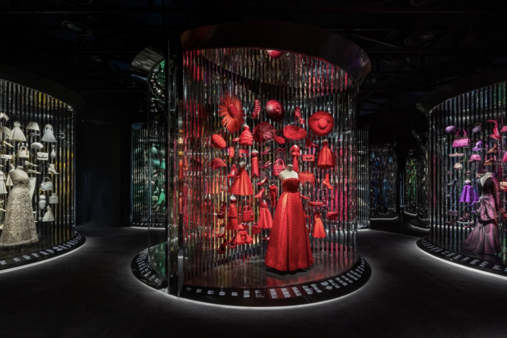

Exhibition Christian Dior - Seoul
Textile design · Graphic design · Exhibition
Contributed to the graphic design for the exhibition “Christian Dior: Designer of Dreams.” in Seoul.
Produced signage and infographic designs applied throughout the exhibition space.



